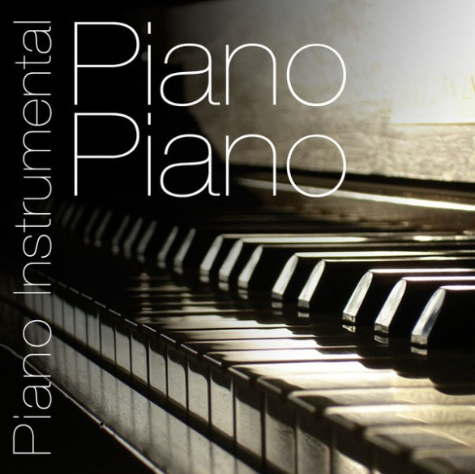

About Our Store

Vinyl Grace Records is a fictional family-inspired record store created to celebrate the music that connects generations. Our shop brings together worship music, timeless Latin classics, and peaceful instrumental selections in one welcoming place.
We believe music can create memories, strengthen family connections, and bring comfort to everyday life. Our collection is designed for people who value meaningful lyrics, warm nostalgia, and music with heart.
At Vinyl Grace Records, customers can discover albums that remind them of home, inspire faith, or simply create a peaceful atmosphere. Our goal is to offer music that feels personal, uplifting, and memorable.
Why Vinyl?
Vinyl offers a listening experience that feels warm, intentional,and nostalgic. It encourages people to slow down, enjoy music together, and appreciate each album as a complete work of art.